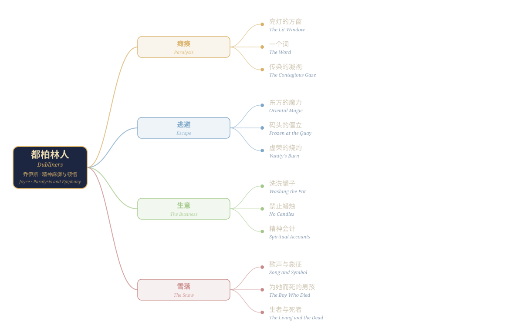

都柏林人
〇 · 书籍信息
基本信息
| 书名 | 《都柏林人》——人民文学出版社「蜂鸟文丛」版，据 Penguin Classics 1993 年版译出；十五篇＋苏福忠译本序＋乔伊斯生平年表；〈死者〉苏福忠译、〈神恩〉马爱新译 |
|---|---|
| 作者 | 詹姆斯·乔伊斯（1882–1941），都柏林人多子女家庭出身；1904 年与诺拉私奔欧洲大陆后终身未归故土；晚年几乎失明，1941 年 1 月 13 日病逝苏黎世 |
| 译者 | 苏福忠——人民文学出版社资深编审、译者，编过《尤利西斯》中译；其译本序直言：若喜欢乔伊斯，不如当散文读，「感觉他的用心，体会他的苦衷」 |
| 体裁 | 短篇小说集（1914）——先后被四十多家出版商退稿、历经九年才成书，出版首年只卖出五本；日后却成为二十世纪短篇小说的语法书 |
| 一句话 | 十五篇写尽一座城的精神麻痹——从「瘫痪」一词开始，到「落在所有生者和死者身上」的一场雪结束：顿悟是乔伊斯给平凡人生留下的唯一出口 |
一 · 核心主题总览
十五篇之下，是四组互相咬合的母题：① 瘫痪（精神麻痹的命名）
开篇《姐妹》里，少年夜夜对着垂死神父的窗口默念一个词：「瘫痪」——它「像某种有害的、罪恶的生物的名字」。乔伊斯把都柏林的病写在第一页：不是身体的病，是意志、勇气与行动力的全面停摆——十五篇全是这扇亮灯的窗的不同角度。
② 顿悟（写作的语法）
乔伊斯自释其写法「是一种探索，靠的是感受、意会；是顿悟，是一事一物一种景象或一段难忘的思绪，一种精神上的显露」——顿悟（epiphany）原是宗教术语：神在平凡瞬间显身；乔伊斯把它移进小说：不给道理，只给那一瞬。
③ 逃避与僵立（码头的抉择）
《阿拉比》的少年被「东方的魔力」驱使，《伊芙琳》的姑娘在码头僵住——逃避有两种下场：跑去了的看见自己虚荣的形状，没跑成的被写成「像一个无助的动物」：乔伊斯不裁判，只呈现。
④ 雪落（生者与死者的和解）
压轴《死者》的结尾：雪「寂然无声地穿过宇宙，悄然下落，像落向它们的最后归宿，落在了所有生者和死者身上」——个体叙事在一个降落动作里接入宇宙尺度：加布里埃尔认领了自己的位置——纪念与前行不再是二选一。
二 · 第一段 童年：窗与名字—— 瘫痪 · 阿拉比 · 顿悟 ——
瘫痪：一个词的恐惧
开篇《姐妹》里，少年每夜走过垂死神父弗林亮灯的方窗，发现亮光「暗淡而均匀」，他每夜轻轻对自己说一个词——「瘫痪」，并觉得它「像某种有害的、罪恶的生物的名字」。全书十五篇由此定调：瘫痪的不是肢体，是都柏林人的精神——而少年「又渴望靠近一些，看看它致命的效果」：下一代的凝视里已经埋着传染。
◆ 语言学习 · 命名 · 病理
| 瘫痪 | 精神麻痹的专名——说得出病症的名字，是诊断的开始 |
|---|---|
| 亮灯的方窗 | 观察的哨位——整本书都是这扇窗：暗淡而均匀的灯光，是不置一词的病历 |
阿拉比：东方的魔力
少年暗恋邻家女孩，只因她一句「那会是个精彩的集市」，便发誓远赴市集「阿拉比」为她买礼物——「『阿拉比』的音节向我呼唤，对我产生一种东方的魔力」。集市熄灯打烊时，他独自站在黑暗里，「看到自己像一个被虚荣驱赶和嘲弄的生物，我的眼睛被痛苦与愤怒烧灼着」。全篇的结构是「神圣化→庸常化」的双段坠落：魔力熄灭的一刻，他没有得到礼物，却得到了全书第一场成年的顿悟。
◆ 语言学习 · 虚荣 · 坠落
| 东方的魔力 | 想象的镀金——把爱情与远方都点亮：魔力全在自己眼里 |
|---|---|
| 虚荣 | 顿悟的第一课——要的到底是那个地方，还是那个被点燃的自己 |
译本序：顿悟与苦衷
苏福忠译本序梳理了这本退稿九年的书：乔伊斯自释「是一种探索，靠的是感受、意会；是顿悟，是一事一物一种景象或一段难忘的思绪，一种精神上的显露」；序末直言：若喜欢乔伊斯，「不如当作散文来读，感觉他的用心，体会他的苦衷，也许收获更大」。译者给出的是一条低门槛的读法：不跟评论家赛跑，先跟瞬间相遇。
◆ 语言学习 · 读法 · 散文化
| 退稿九年 | 经典的难产史——出版首年只卖五本：被拒绝的时间与被阅读的时间一样长 |
|---|---|
| 当作散文读 | 降维的入口——散文不欠你情节：它只欠你一个让你停下来的句子 |
三 · 第二段 青春：码头与歌—— 逃走 · 大理石厅堂 · 僵立 ——
伊芙琳：码头的僵立
十九岁的伊芙琳决意随水手弗兰克私奔阿根廷，船开前她反复打气：「逃走！她必须逃走！」「她有权利快乐。」可汽笛响起的一刻，她抓住铁栏杆僵在码头——「她把苍白的脸对着他，那样被动，像一个无助的动物」。心理动员越充分，码头的僵立越刺目：她祈求的「生活」与眼前真实的「生活」，在栏杆两侧永不相交。
◆ 语言学习 · 抉择 · 失能
| 铁栏杆 | 瘫痪的具象——计划越周密，最后一米的身体反应越诚实 |
|---|---|
| 无助的动物 | 乔伊斯的克制——不写心理独白，只写一个姿态：让读者自己疼 |
泥土：大理石厅堂
洗衣房女仆玛丽亚——善良、人人喜欢——在万圣之夜唱《我梦见我住在大理石厅堂》：「我梦见我住在大理石厅堂，众多仆从奴隶侍立身旁」，唱到第二节忘了词，又把开头唱了一遍；孩子们不明白，大人们眼里涌上泪水。她忘掉的恰恰是「骄傲与富有被爱情取代」那一段：乔伊斯不点破玛丽亚错过的爱情，只让她唱丢命运唯一的提醒。
◆ 语言学习 · 遗忘 · 暗雷
| 大理石厅堂 | 歌中的幻境——唱它的人一辈子没住进去过 |
|---|---|
| 忘了词 | 遗憾的出口——人生的缺口常以口误、忘词的方式浮出水面 |
一件惨案：单向的精神生活
达菲先生「过着一种与自己身体保持距离的生活」，与西尼科太太交往时「他借给她书，给予她思想，与她分享自己的精神生活。她倾听一切。」——发现关系可能改变秩序，便干脆中断；数年后他在报纸死亡栏里读到她的名字。精神的给予者恰恰是缺席者：「她倾听一切」五个字写尽这段关系的单向结构——惨案判给的从来不是那列火车。
◆ 语言学习 · 关系 · 结构
| 借书给她 | 知识投喂——精神上居高临下的给予，可能是情感上最省力的自私 |
|---|---|
| 死亡栏 | 新闻的冷面——验尸报道原文入小说：生活的判决书不用形容词 |
四 · 第三段 成年：账本与罐子—— 洗洗罐子 · 禁止蜡烛 · 精神会计 ——
洗洗罐子：忏悔的生意
破产保险员珀登神志失常后，朋友们筹划一场「静修」帮他找回工作——暗语叫「洗洗罐子」：「这儿的杰克、我和麦考伊——我们都要洗洗罐子。」讨论教仪时科南先生划出底线：「不要，活见鬼，我禁止蜡烛！」——连虔诚也要讨价还价。宗教被写成一桩可分割的业务：静修可以组团、忏悔可以划界、蜡烛可以单独议价。
◆ 语言学习 · 信仰 · 业务
| 洗洗罐子 | 体面的暗语——把敷衍翻译成行话：仪式的外壳，生意的内核 |
|---|---|
| 我禁止蜡烛 | 虔诚的议价——可分割的信仰治不了任何人 |
精神会计的账本
珀登神父讲「精神会计」：思想、记忆、感情四个账本（还要对魔鬼的秘密账本做坏账处理），逐一核对亏空与盈余，以临终者的自述作结：「嗯，我核对了我的账本，发现一切良好。」乔伊斯让布道套上会计课的壳：宗教语言与商业语言在讲道台上完全合流——都柏林人已经用记账的方式处理灵魂。
◆ 语言学习 · 布道 · 修辞
| 精神会计 | 灵魂的记账法——账本、利息、坏账：信仰的成本核算 |
|---|---|
| 一切良好 | 最可疑的结论——四个账本都核过了吗？ |
活人的职任
《死者》舞会上，加布里埃尔发表餐后演说：别沉溺于对逝者的怀念——「我们全都有活人的职任，活人的感情，这就要求我们，也有权利要求我们做出不懈的努力。」这是健康的生死观的一半：纪念不该绑架生活；但另一半藏在几小时之后——有些死者不消耗你的职任，他们参与你的感情。
◆ 语言学习 · 生死 · 职任
| 活人的职任 | 为生者干杯——演说的正面强攻：行动是对怀念的答复 |
|---|---|
| 不懈的努力 | 职任的语法——活着的人有权要求自己继续走 |
五 · 第四段 收官：歌声与雪—— 象征 · 往事 · 普降瑞雪 ——
歌声与象征
格蕾塔在楼梯口听人唱《奥格里姆的少女》，加布里埃尔在暗处凝望：「妻子的身姿既优雅又神秘，仿佛她是什么东西的象征。」他甚至想好了画名《遥听乐曲》；而她正被同一首歌拽回少年时代——丈夫看见的是画，妻子听见的是遗言：同一场景，两种现实——乔伊斯埋下的钩子是「象征」二字：他把妻子审美化、画框化，以为那是爱的巅峰。
◆ 语言学习 · 凝视 · 错位
| 象征 | 审美化的危险——当身边人成了画，你们就不在同一现实里 |
|---|---|
| 遥听乐曲 | 丈夫的构图——构图越完美，离真相越远 |
为她而死的男孩
格蕾塔讲出少年往事：戈尔韦男孩迈克尔·富里常唱那首歌，重病中仍冒雨去她家道别，七天后死去——「我想他是为我而死的。她回答说。」「但是他说他不想活了。我至今还清清楚楚地看得见他那双眼睛！」加布里埃尔自以为独占了妻子的现在与未来，却发现自己是她少年故事里的「后来的人」：乔伊斯不写嫉妒，写谦卑。
◆ 语言学习 · 往事 · 谦卑
| 为我而死 | 别人感情的初始坐标系——不与之竞争，才能真正走近 |
|---|---|
| 那双眼睛 | 至今看得清的记忆——往事不是档案，是仍在跳动的器官 |
普降瑞雪
加布里埃尔彻夜难眠，望窗上落雪：「这是他动身西游的时候了。是的，报纸说得对：爱尔兰普降瑞雪。」雪落满黑色中部平原、艾伦沼泽、香农河黑流，落满迈克尔·富里孤零零的墓地——「他还听见那雪寂然无声地穿过宇宙，悄然下落，像落向它们的最后归宿，落在了所有生者和死者身上。」结尾的雪完成最后的顿悟：天空对生者与死者一视同仁——加布里埃尔最终认领了自己的位置：动身西游不是逃离，是承认自己也将被这场雪覆盖。
◆ 语言学习 · 收梢 · 宇宙
| 普降瑞雪 | 报纸的措辞——公共信息与私人启示在窗前相遇 |
|---|---|
| 生者和死者 | 雪的公平——个体叙事接入宇宙尺度：短篇小说史公认的最高收梢之一 |
六 · 人物图鉴与成长弧线—— 主角配角 · 一张表看穿 ——
主要人物
少年叙述者——《姐妹》《阿拉比》的「我」——观察瘫痪的哨兵，也将被它传染
伊芙琳——十九岁的洗衣工——码头栏杆前僵住的逃亡者
加布里埃尔·康罗伊——《死者》的男主——自以为拥有妻子全部现在与未来的「后来的人」
次要人物（功能位）
| 弗林神父 | 《姐妹》的死者——瘫痪的第一具标本，教过少年很多 |
|---|---|
| 玛丽亚 | 《泥土》的女仆——善良的和事佬，唱丢了自己人生的提醒 |
| 珀登神父 | 《神恩》的讲道者——「精神会计」的发明人，也是瘫痪的幸存者 |
| 格蕾塔·康罗伊 | 《死者》的妻子——听着旧歌被拽回戈尔韦的少女时代 |
| 迈克尔·富里 | 格蕾塔的少年——「我想他是为我而死的」：全书最轻也最重的一个死者 |
七 · 主题与象征—— 每个道具都在说话 ——
| 亮灯的方窗 | 瘫痪的哨位——暗淡而均匀的灯光是不置一词的病历 |
|---|---|
| 铁栏杆 | 抉择的失能——码头上的最后一米 |
| 大理石厅堂 | 唱不进去的幻境——被遗忘的那一段歌词 |
| 账本 | 灵魂的记账法——宗教语言与商业语言的合流 |
| 旧歌 | 记忆的传送门——《奥格里姆的少女》一响，戈尔韦就回来了 |
| 雪 | 最后的顿悟——落在所有生者和死者身上 |
八 · 写作手法赏析—— 怎么写，就能怎么学 ——
① 分组结构
童年三篇→青少年四篇→成年四篇→社会生活三篇→《死者》收官——人生四段＋一次总决算。
② 顿悟收梢
不给结局只给瞬间：集市熄灯、汽笛响起、雪落窗前——每一篇都停在看清自己的那一刻。
③ 克制叙事
验尸报道原文入小说、结局只写僵立——叙述者不评论，让读者自己疼。
④ 首尾闭环
第一篇《姐妹》写死者与生者的窗，压轴《死者》写雪落生者与死者——生死互文，隔十四篇遥遥相认。
九 · 名段欣赏—— 原文精读 · 逐段赏析 ——
十 · 金句摘录—— 12 条 · 中英对照 · 带出处 ——
"每天夜里我抬头看着那扇窗户时，都会轻轻对自己说一个词，「瘫痪」。"—— 《姐妹》
"「阿拉比」的音节向我呼唤，对我产生一种东方的魔力。"—— 《阿拉比》
"我看到自己像一个被虚荣驱赶和嘲弄的生物，我的眼睛被痛苦与愤怒烧灼着。"—— 《阿拉比》结尾
"逃走！她必须逃走！弗兰克会接纳她，他会给她生活，也许还有爱情。但她想要生活。"—— 《伊芙琳》
"她把苍白的脸对着他，那样被动，像一个无助的动物。"—— 《伊芙琳》结尾
"我梦见我住在大理石厅堂，众多仆从奴隶侍立身旁，"—— 《泥土》
"这儿的杰克、我和麦考伊——我们都要洗洗罐子。"—— 《神恩》
"嗯，我核对了我的账本，发现一切良好。"—— 《神恩》· 讲道
"我们全都有活人的职任，活人的感情，这就要求我们，也有权利要求我们做出不懈的努力。"—— 《死者》· 演讲
"妻子的身姿既优雅又神秘，仿佛她是什么东西的象征。"—— 《死者》· 楼梯
"我想他是为我而死的。她回答说。"—— 《死者》· 往事
"他还听见那雪寂然无声地穿过宇宙，悄然下落，像落向它们的最后归宿，落在了所有生者和死者身上。"—— 《死者》结尾
十一 · 拓展阅读—— 原文 · 词条 · 译文 ——
原文与文本
- Dubliners — Wikipedia —— 1914 年成书经过、十五年退稿史与十五篇的结构分组
- James Joyce — Wikipedia —— 都柏林、的里雅斯特、巴黎、苏黎世的流亡路线
主题与延伸
- The Dead (short story) — Wikipedia —— 压轴中篇的文本细节与 1987 年约翰·休斯顿电影改编
- Epiphany (literature) — Wikipedia —— 「顿悟」术语的来龙去脉：从宗教显圣到现代小说技法
十二 · 个人感悟与心得—— 三点心得 ——
窗 · 码头 · 雪
① 宪法一样的窗，天天亮着
瘫痪写在第一页——每个城市、每个家庭都有自己的「瘫痪」：说得出它的名字是诊断的开始，把病灶当风景的凝视是发病的前兆。
② 顿悟不欠你情节
译本序的读法是散文式读法——真正改变认知的从来不是长篇道理，而是一句歌词、一场雪、一个背影：给自己留出发呆的空档，顿悟才有落点。
③ 雪落在所有生者和死者身上
《死者》的收梢——无论你站在生者的职任里还是死者的记忆里，天空对你们一视同仁：怀着这份平等去生活，纪念与前行就不再是二选一。
—— 乔伊斯死于 1941 年 1 月 13 日，苏黎世。他给都柏林写的判词只有两个字：瘫痪；而他给平凡人生留的出口也只有两个字：顿悟。
十三 · 一页速查（复习用）
| 全书骨架 | 十五篇：童年三篇→青少年四篇→成年四篇→社会生活三篇→中篇《死者》收官 |
|---|---|
| 核心命题 | 精神麻痹；顿悟的语法；逃避与僵立；生者与死者的和解 |
| 必读篇目 | 《姐妹》《阿拉比》《伊芙琳》《泥土》《神恩》《死者》（六篇骨架） |
| 三大符号 | 亮灯的方窗（瘫痪）· 铁栏杆（僵立）· 雪（顿悟） |
| 一句话总结 | 乔伊斯用十五篇给一座城做了三页病历——诊断是「瘫痪」，处方是「看清自己的一瞬」 |
十四 · 全书思维导图—— 一图纵览 ——

一图纵览全书骨架 · 中英双语对照 · 手机端可左右滑动查看全图